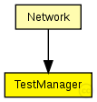

This documentation is released under the Creative Commons license
This documentation is released under the Creative Commons licenseDatabase module for TestModules. This module has to be present in you simulation as a global module if you wan't to use the class TestModule
The following diagram shows usage relationships between types. Unresolved types are missing from the diagram. Click here to see the full picture.
The following diagram shows inheritance relationships for this type. Unresolved types are missing from the diagram. Click here to see the full picture.
If a module type shows up more than once, that means it has been defined in more than one NED file.
| Network (compound module) | (no description) |
//Database module for TestModules. This module has to be present //in you simulation as a global module if you wan't to use the class //TestModule simple TestManager { }
This documentation is released under the Creative Commons license